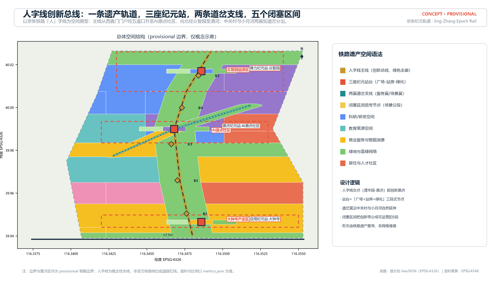
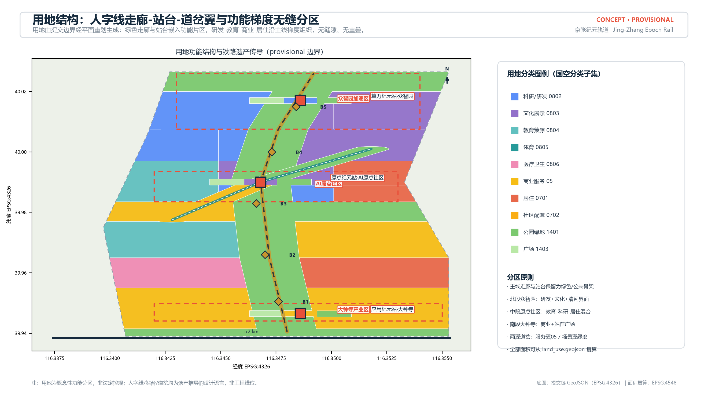
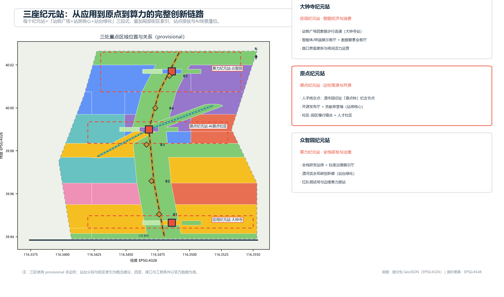
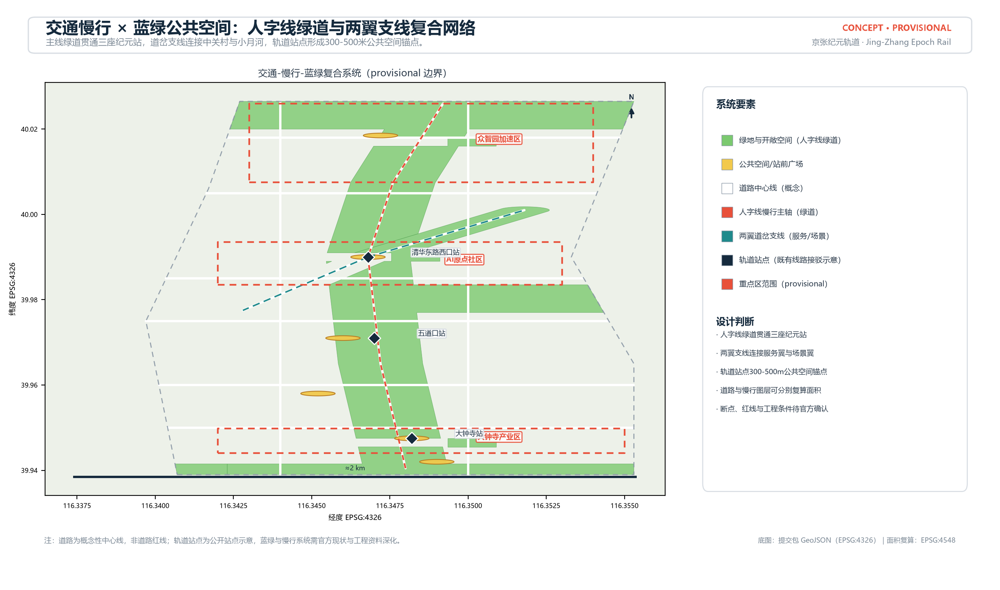
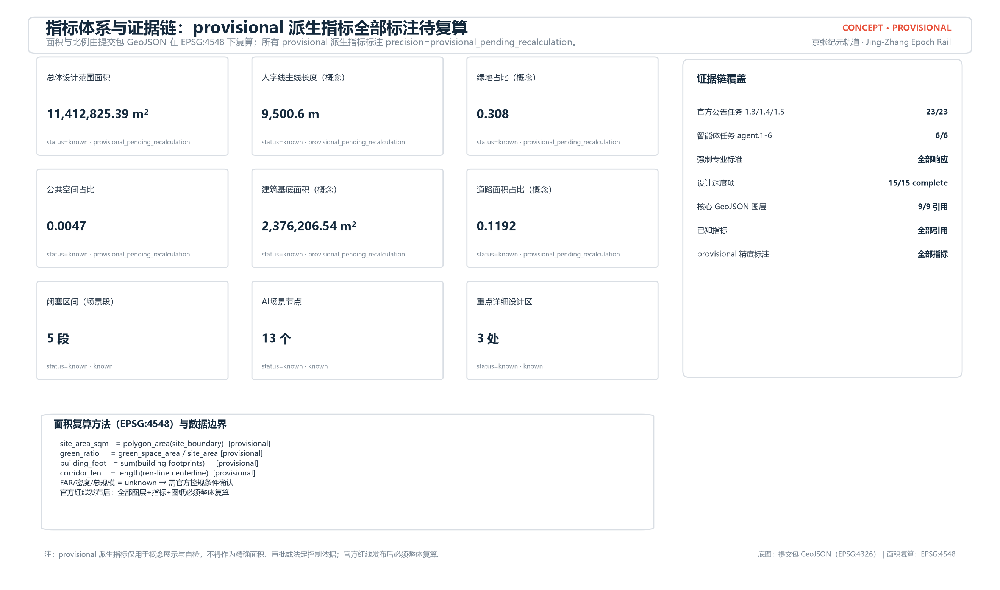

京张纪元轨道：百年京张AI创新带城市设计概念方案（v2 铁路遗产重构版）
以京张铁路「人」字线为空间原型重构创新带：一条遗产轨道串联三座纪元站，两条道岔支线连接两翼，五个闭塞区间承载AI场景分段运营；配套品牌资产、生态图谱、场景矩阵与年度运营体系。
京张纪元轨道：百年京张AI创新带城市设计概念方案（v2 铁路遗产重构版）
设计依据与资料清单
本方案为 AI 智能体提交的 formal 城市设计概念成果（v2 重构版），第一依据为北京市规划和自然资源委员会海淀分局发布的《百年京张AI创新带城市设计国际方案征集资格预审公告》（2026-05-09）[source:OFFICIAL-ANNOUNCEMENT]，任务结构依据面向智能体的开源征集任务书 [source:AGENT-TASKBOOK] 及其本地参考摘录，机器可读边界与约束依据 brief/site-package/ 设计任务包 [source:SITE-PACKAGE]。生成前已读取 design_brief.json、allowed_design_space.json、sources.json、enums/、ranges/、schemas/、data/source_registry.json 与 data/processed/agent_fact_pack.md [source:PROCESSED-FACT-PACK]，并按 project_scope_summary.csv、agent_task_requirements.csv、source_use_matrix.csv 与 missing_data_checklist.csv 建立任务、范围、资料用途和缺口清单。
资料边界按 [source:SOURCE-REGISTRY] 区分：官方公告与任务书为 formal 可用来源；provisional_boundaries.geojson 仅登记为 provisional intake 线索 [source:BOUNDARY-SOURCE]，三处重点区临时多边形同源 [source:KEY-AREA-SOURCE]。当前官方精确红线、三处重点区 official polygon、控规指标（容积率、建筑高度、建筑密度、绿地率、退线）与现状建筑/权属/市政工程资料均未随公开任务书提供，全部列为待补资料项 [depth:risk_missing_data]。v2 版将所有由 provisional 边界派生的指标在 metrics.json 中统一标注 precision="provisional_pending_recalculation"，正文、图表、HTML 与图纸均同步披露：这些数值仅用于概念展示与自检，不得作为精确面积、审批或法定控制依据。
专业标准采用仓库本地参考快照：城市设计管理办法 [standard:MOHURD-URBAN-DESIGN-MEASURES]、控制性详细规划深度要求 [standard:MOHURD-CONTROL-DETAILED-PLANNING]、国土空间用地用海分类指南 [standard:MNR-LAND-USE-CLASSIFICATION-GUIDE]、建筑工程设计文件编制深度规定 [standard:MOHURD-ARCH-DESIGN-DEPTH-2016]，以及公告与任务书本身 [standard:PROJECT-OFFICIAL-ANNOUNCEMENT]、[standard:PROJECT-AGENT-OPEN-CALL-TASKBOOK]。本地参考状态以 standards.json 为准，缺官方文件的条目只作缺资料提醒。

提交包按「正文 ↔ 矩阵 ↔ GeoJSON ↔ 指标」四层证据链组织，并在 assets/brand/ 与 assets/figures/ 中提供品牌与图解资产。全部图表为 AI 智能体原创矢量/程序化绘制，逐资产权利登记见 report/copyright_statement.md [source:RIGHTS-REGISTRY] [source:SITE-PACKAGE]。边界状态为 provisional（official_boundary=false、geometry_role="provisional_constraint"），对应 [data:geometry/site_boundary.geojson#SITE-001]；官方红线发布后，全部图层、指标、图纸与 HTML 必须整体复算，不得只替换单个几何文件。
三层范围工作框架
方案遵循公告确定的三层范围：统筹研究范围约 43.6 平方公里，负责 AI 产业生态、区域协同与未来城市形态研究；总体设计范围约 11.4 平方公里，负责城市更新总体框架、产业空间布局、交通市政支撑与风貌控制；重点区域范围约 368.4 公顷（三区合计），负责众智园、AI 原点社区、大钟寺的详细设计 [standard:PROJECT-OFFICIAL-ANNOUNCEMENT]。三层范围逐级传导：统筹研究决定产业链与城市形态判断，总体设计把判断落到更新项目、空间结构与设施承载，重点区详细设计验证具体地块、建筑、交通、公共空间和 AI 应用的可实施性 [depth:three_level_scope_framework]。
总体设计范围采用 provisional 边界 [data:geometry/site_boundary.geojson#SITE-001]，三处重点区采用同源临时多边形 [data:geometry/key_areas.geojson#PROV-KEY-001]、[data:geometry/key_areas.geojson#PROV-KEY-002]、[data:geometry/key_areas.geojson#PROV-KEY-003]。v2 版在边界内采用「人字线-纪元站-道岔翼-闭塞区间」的铁路遗产空间语法组织用地、公共空间与场景，全部空间结论按「可讨论、可复核、可替换后重算」原则写入 [source:BOUNDARY-SOURCE]。区域协同（北纬社区、未来科学城、怀柔科学城、经开区及京津冀）以概念关系图表达，不构成法定规划结论。

| 层级 | 设计问题 | 本方案回答 | 数据落点 | | --- | --- | --- | --- | | 统筹研究范围 | AI 生态与未来城市形态 | 生态图谱五层回路 + 区域协同关系图 | compliance/standard 矩阵、ecosystem-map.png | | 总体设计范围 | 产业、更新、交通、风貌 | 人字线-纪元站-道岔翼-闭塞区间结构 + 九类图层 | [data:geometry/land_use.geojson#LU-001]、[data:geometry/roads.geojson#ROAD-001] | | 重点区域范围 | 三区详细设计 | 三座纪元站台（广场-站房-绿化）+ 街区索引 | key_areas.geojson、A3/A0 图纸 |
统筹研究范围产业与未来城市研究
统筹研究范围的核心任务是构建世界级 AI 创新生态与适配 AI 新质生产力的未来城市形态 [standard:PROJECT-AGENT-OPEN-CALL-TASKBOOK]。v2 版提出「京张纪元轨道（Jing-Zhang Epoch Rail，简称 JZ·EPOCH）」总体概念，并把空间形态从通用「一带三核」重构为铁路遗产派生语法：以京张铁路「人」字线为创新总线（南段自西直门门户经五道口升至 AI 原点社区，北段经众智园至清河界面），三处重点区组织为三座「纪元站台」（每座站台按「站前广场-站房核心-站台绿化」三段式设计），中关村科技服务翼与小月河场景赋能翼如道岔从人字线交点分出，主线按「闭塞区间」划分为 B1-B5 五个可运营场景段 [depth:overall_spatial_structure]。该语法直接回应 1909 年詹天佑「人」字线的工程遗产，把铁路记忆转译为 AI 创新带的组织逻辑，而非简单套用产业园区网格。
命名体系以「纪元」突出 1909 年京张铁路开创中国自主工程纪元，以「轨道」同时指向铁路遗址与 AI 数据轨道，支持系列命名（纪元站、纪元节、纪元指数、闭塞区间 B1-B5）。Logo 与视觉识别为原创矢量设计：双轨与人字道岔交汇构成 E 形符号，交汇点设信号红「原点节点」，寓意「人字线交点即创新原点」；配套色彩系统（轨道深蓝/信号红/AI 青/中关村金/纸白）、字体方向、双语口号与导视符号（纪元站/信号节点/时刻表/道岔指向），详见 [assets/figures/brand-board.png](assets/figures/brand-board.png) 与 assets/brand/ [depth:overall_spatial_structure]。所有品牌元素为程序化原创绘制，无第三方字体、图片或商标依赖，权利登记见 report/copyright_statement.md。

面向智能体任务书要求给出 5-8 个全球 AI 创新生态案例及可转化机制，本方案选取并转化为生态图谱五层回路：高校策源（北大/清华/北航/北邮等类别化表述）、开源协作、企业转化、资本与服务（中关村翼）、场景验证（小月河翼）、国际路演与治理（大钟寺/众智园）[source:AGENT-TASKBOOK]。七类公开案例作为背景性参考 [source:PUBLIC-ECOSYSTEM-CASES]：硅谷高校-园区-资本联动、剑桥科技园成果转化、特拉维夫政府风险分担与国防成果转化、深圳南山全产业链协同、伦敦 King's Cross 站城一体更新、首尔数字媒体城场景开放、杭州未来科技城人才与场景政策。每条案例转译为空间-要素机制：就近孵化（原点社区）、研发-测试-展示梯度产业空间（众智园）、场景开放招商（大钟寺/小月河）、站城一体化公共空间更新（对应 King's Cross）、数据/算力/场景要素保障（两翼）[depth:existing_conditions_diagnosis]。案例与要素机制均为公开资料综述与概念转译，具体数据与授权需在深化时逐项补充来源 [source:SOURCE-REGISTRY]。
区域协同按「人才-成果-算力-制造-场景」五要素环流组织：北纬社区（人才与成果外溢）、未来科学城（大科学装置与算力）、怀柔科学城（基础研究转化）、北京经开区（制造/机器人/整车）、京津冀网络（场景、市场与供应链），以概念关系图表达协同回路 [depth:existing_conditions_diagnosis]。未来城市形态研究把 AI 交通、连续绿网、创新服务设施与国际化生活工作氛围落实到可定位的功能区、节点与廊道 [standard:MOHURD-URBAN-DESIGN-MEASURES]，统筹研究范围为总体设计提供产业与功能传导，不新增伪精确红线。

总体设计范围城市更新与控规深度城市设计
总体设计范围要求达到控制性详细规划的城市设计深度 [standard:MOHURD-CONTROL-DETAILED-PLANNING]。v2 版总体空间结构为「人字线主线 × 三座纪元站台 × 两翼道岔 × 五个闭塞区间」：人字线主线即京张遗址公园活力带（绿色走廊），纪元站台为产业与公共活动锚点，道岔翼为功能支线，闭塞区间把创新带分成 B1-B5 五个可运营段（B1 西直门门户-五道口智汇段、B2 小月河场景段、B3 原点开源段、B4 产学研过渡段、B5 众智园算力段）[depth:overall_spatial_structure]。空间结构在 [data:geometry/land_use.geojson#LU-001] 中以无缝分区表达，用地由提交边界经平面重划生成（无缝隙、无重叠），经 [depth:land_use_layout] 校核；人字线走廊、站台与道岔翼用地均来自铁路遗产语法而非网格堆叠。
城市更新总体框架按「保留历史与轨道遗址、改造低效空间、更新门户节点、预留留白」四类策略组织 [depth:retain_renovate_demolish]：保留清华园车站旧址等历史文化要素与轨道遗址公共属性；改造高校周边、园区周边低效工业与老旧商务空间；更新大钟寺、西直门等门户节点；预留弹性留白应对产业迭代 [data:geometry/buildings.geojson#BLDG-001]。更新对象为概念性识别，未取得现状建筑与权属资料前，不给出具体地块拆改留结论。
产业目标与功能布局按三段纪元叙事组织：北段众智园聚焦全栈自主创新、标准制定与安全治理；中段原点社区聚焦近校策源、成果转化与人才服务；南段大钟寺聚焦智能经济、场景消费与国际交往。建筑规模、开发强度与高度体量：由于官方控规条件缺失，容积率、建筑密度、总建筑规模与建筑高度全部列为待确认项 [depth:development_intensity_controls]，本方案仅在图纸与 HTML 中给出「概念性体量示意」并明确其非法定性质 [depth:height_massing_character]。待补清单包括官方控规指标、道路红线、退线与市政容量，相关结论在 assumptions.json 中登记。
重点区域详细设计
三处重点区域均达到规划综合实施方案的城市设计深度要求 [depth:three_key_area_detailed_design]，并分别引用 [data:geometry/key_areas.geojson#PROV-KEY-001]、[data:geometry/key_areas.geojson#PROV-KEY-002]、[data:geometry/key_areas.geojson#PROV-KEY-003]。因官方 polygon 缺失，三区暂以 provisional 多边形表达，所有精确面积与四至均待官方边界确认后复算。每座纪元站台按「站前广场-站房核心-站台绿化」三段式组织，并在图纸中给出街区索引、站点接驳与 AI 场景落位示意 [depth:three_key_area_detailed_design]。

众智园纪元站（算力纪元站，B5 段）：定位花园型全栈自主创新街区。站前广场承接对外交通与产业展示门户，站房核心布局全栈研发、标准制定与安全治理展示，站台绿化延伸至清河滨水低碳创新廊；AI 场景包括模型红队测试场（T1）、安全治理沙盒、低碳算力体验点 [depth:traffic_rail_slow_parking]。实施风险为权属与现状建筑复杂，需先完成现状调查。
原点纪元站（原点纪元站，B3 段）：定位近校型成果转化与人才社区，位于人字线交点（清华园旧址）。站前广场设置「原点钟」纪念节点与发布广场，站房核心布局开源发布厅与贡献荣誉墙，站台绿化衔接高校-园区慢行缝合与人才社区；AI 场景包括开源发布厅、近校成果转化街、AI 教育体验点 [source:AGENT-TASKBOOK]。实施风险为校区权属与科研数据授权边界，校园与园区联系需专项研究。
大钟寺纪元站（应用纪元站，B1 段）：定位城市型智能经济与国际交往街区。站前广场组织大钟寺站前广场一体化与路口四象限步行连通，站房核心布局智能体/终端展示客厅、数据要素会客厅与国际路演厅，站台绿化衔接城市客厅；AI 场景包括智能体互操作展示、数据要素沙盒、国际路演 [depth:traffic_rail_slow_parking]。实施风险为轨道站区改造与地下空间条件需工程资料确认，相关结论仅作概念建议。
AI 创新生态、人才画像与 AI+ 场景
AI 创新生态按五大功能（AI 全栈自主创新体系、世界级创新生态、场景赋能新范式、智能化活力城市、AI 治理全球话语权）组织 [standard:PROJECT-AGENT-OPEN-CALL-TASKBOOK]，与三区两翼一一对应，并落到公共空间图层 [data:geometry/public_space.geojson#PUBLIC-001] 与绿地图层 [data:geometry/green_space.geojson#GREEN-001] [depth:blue_green_public_space]。用户画像在核心五类（开源开发者、初创团队、头部企业访客、周边居民、高校师生）之外，增设老年人、儿童与家庭、残障人士、低收入与非数字用户四类，共九类画像，每类均给出需求与空间响应；无障碍采用「连续缓坡路径+盲道+语音导视+线下人工窗口+社区代办」的复合保障，AI 建议全部可申诉、可人工接管，见 [assets/figures/personas-inclusion.png](assets/figures/personas-inclusion.png)。

方案提供 13 张场景卡（10 张生活/产业场景 + T1-T3 三张 AI 产业测试验证场景），每张卡均声明空间载体、数据与隐私边界、模型/智能体、运营主体、人工复核与 KPI，形成完整「场景-空间-运营」矩阵 [depth:traffic_rail_slow_parking]：开源发布厅（原点站房）、安全治理沙盒（众智园）、端侧算力驿站（沿线节点）、AI 慢行导航（人字线绿道）、国际路演客厅（大钟寺）、清河低碳创新廊（众智园站台绿化）、近校成果转化街（原点站台）、数据要素会客厅（大钟寺站台）、AI 生活服务样板街（社区节点）、全球 AI 活动周路线（一带公共空间）；T1 模型红队测试场、T2 边缘智能验证节点、T3 智能体互操作走廊。全部场景遵循数据最小化、可解释与人工复核原则，不采集个人行为画像；测试场景需完成数据授权、安全评估与主管部门批准后方可试点，不表述为已批准运营 [source:AGENT-TASKBOOK]。场景节点数量登记在 [metric:scenario_node_count]。
用地、建筑规模与拆改留方案
用地分区依据国土空间用地用海分类指南 [standard:MNR-LAND-USE-CLASSIFICATION-GUIDE]，采用 0802 科研、0803 文化、0804 教育、0805 体育、0806 医疗卫生、05 商业服务业、0701/0702 居住与社区配套、1401 公园绿地、1403 广场等概念分类 [depth:land_use_layout]。v2 版分区由「人字线走廊（1401）+ 纪元站台（1403 广场/站房核心/1401 绿化）+ 道岔翼（05 服务翼 / 1401 场景翼绿廊）+ 功能片区」组成：科研用地约 [metric:land_use_area_research_0802] 平方米，商业服务业约 [metric:land_use_area_commercial_05] 平方米，居住与社区配套合计约 [metric:land_use_area_residential_07] 平方米，绿地与开敞空间合计约 [metric:land_use_area_green_14] 平方米 [data:geometry/land_use.geojson#LU-001]。用地比例体现「蓝绿优先、研创主导、配套均衡」的概念取向，具体比例需官方控规校核。
建筑基底为概念性布置 [data:geometry/buildings.geojson#BLDG-001]，区分研发、实验室、孵化器、办公、混合功能、教育、居住、人才公寓、社区服务、商业、文化展示与现状保留等类型，建筑基底总面积约 [metric:building_footprint_area_sqm] 平方米（provisional 复算值）。建筑高度、体量、界面与风貌控制按「轨道遗址-中关村理性-未来科技」三层基调提出方向性建议 [depth:height_massing_character]，具体高度分区与开发强度以官方控规为准。
拆改留采用「保留-改造-更新-留白」四类策略框架 [depth:retain_renovate_demolish]：保留历史遗址、轨道记忆与质量较好的高校/社区建筑；改造低效商务、老旧园区与临街界面；更新站前门户与公共空间节点；预留留白用地应对 AI 产业迭代。因缺少现状建筑普查、权属与控规条件，具体地块级拆改留结论列为待补资料与专业复核事项，不编造结论。
交通、轨道、市政与公共服务设施
交通策略围绕轨道站点一体化、道路微循环、慢行断点缝合、停车与绿色交通组织展开 [depth:traffic_rail_slow_parking]。人字线主线绿道、两翼道岔支线与既有轨道站点（五道口、清华东路西口、大钟寺）构成「主线-支线-站点」复合网络，提出 300-500 米公共空间接驳圈；道路中心线 [data:geometry/roads.geojson#ROAD-001] 为概念性布局，表达主线绿道、两翼支线与次干路/支路的复合关系，道路面积与占比按概念红线宽度估算 [metric:road_area_sqm]、[metric:road_ratio]，人字线主线长度约 [metric:corridor_length_m] 米（provisional），官方道路红线确认后复算。
市政与新型基础设施提出端侧算力驿站、分布式能源、智慧杆站与公共服务设施融合的概念方向 [depth:municipal_new_infrastructure]：AI 产业服务设施布局在众智园与大钟寺，人才生活服务设施布局在原点社区与居住组团，新型基础设施沿人字线闭塞区间分级布置。管线、能源、排水、消防与工程可行性资料缺失，全部列为正式深化前置条件 [depth:risk_missing_data]；任何线位与设施标准结论均不构成工程方案。

公共服务设施覆盖创新服务平台、人才公寓、社区服务、医疗、教育与体育设施，服务半径与配置标准依据公开规范作方向性建议，具体设施落位待现状与控规确认。
蓝绿空间、公共空间与城市风貌
蓝绿空间以人字线绿道为骨架，统筹清河滨水界面与小月河绿廊，形成南北贯通、东西连通的步道、骑行道与绿色空间体系 [depth:blue_green_public_space]。绿地图层 [data:geometry/green_space.geojson#GREEN-001] 与公共空间图层 [data:geometry/public_space.geojson#PUBLIC-001] 表达概念性蓝绿网络：绿地面积约 [metric:green_space_area_sqm] 平方米、绿地占比约 [metric:green_ratio]；公共空间面积约 [metric:public_space_area_sqm] 平方米、占比约 [metric:public_space_ratio]，均为 provisional 概念值、非法定指标。
公共空间按「站前广场、创新广场、发布广场、智汇广场、体验广场、门户广场」六类节点组织，落位在大钟寺站、众智园、原点社区、五道口、小月河与西直门门户。AI 朝圣地标目录（概念）不少于 3 处并逐一说明位置、形态与清权要求：清华园旧址「原点钟」纪念装置（人字线交点，兼作报时与数字内容节点，需文保与审批确认）、开源贡献荣誉墙（原点站房核心，展示开发者与智能体贡献，铭牌与内容采用清权字体与工艺）、智能体里程碑广场（大钟寺站前广场，记录年度 AI 里程碑，信息屏内容需人工审核）、开发者散步道（人字线绿道，闭塞区间转译为慢行里程标与代码碑）。配套三级荣誉展示体系（年度里程碑-季度贡献之星-日常徽章）与六件公共空间组件库（站台座椅、信号灯杆、轨枕铺装、时刻表信息屏、道岔标识、遮阳雨棚），详见 [assets/figures/landmark-honor.png](assets/figures/landmark-honor.png) [source:AGENT-TASKBOOK]。

城市风貌以「一条时间轨道、三种纪元表情」组织：北段众智园强调研发园区理性与低碳界面，中段原点社区强调校园人文与街巷尺度，南段大钟寺强调都市活力与智能消费氛围。风貌控制建议（高度体量、界面连续、屋顶形态、色彩与材质）均写入图纸与 HTML 展示，具体控制指标待控规确认 [standard:MOHURD-URBAN-DESIGN-MEASURES]。
更新项目清单、实施政策与分期计划
更新项目清单按三阶段组织，对应 [data:geometry/phasing.geojson#PH-001] 等分期图层 [depth:renewal_project_list]，并附责任主体类型、依赖条件、成本区间（概念）、工期与分期 KPI 建议：
| 编号 | 项目 | 阶段 | 主体类型（概念） | 依赖条件 | 工期（概念） | 分期 KPI（概念） | | --- | --- | --- | --- | --- | --- | --- | | JZ-01 | 大钟寺站前广场一体化 | 近期 | 轨道+区政府+市场 | 站区工程资料 | 2-3 年 | 四象限连通率 | | JZ-02 | 西直门门户广场 | 近期 | 区政府+企业 | 现状/权属 | 1-2 年 | 公共空间开放度 | | JZ-03 | 小月河场景样板街 | 近期 | 区政府+企业联盟 | 场景授权 | 1-2 年 | 场景落地数 | | JZ-04 | 高校-园区慢行缝合 | 中期 | 高校+区政府 | 校园协商 | 2-3 年 | 慢行连通段数 | | JZ-05 | 开源发布厅+荣誉墙 | 中期 | 社区运营+企业 | 品牌/版权 | 1-2 年 | 发布活动场次 | | JZ-06 | 人才社区与服务设施 | 中期 | 保障房+企业 | 用地条件 | 3-5 年 | 人才入住率 | | JZ-07 | 原点钟纪念节点 | 中期 | 政府+文保 | 文保审批 | 1-2 年 | 公众参与度 | | JZ-08 | 清河低碳创新廊 | 远期 | 园区+能源企业 | 防洪/蓝线 | 3-5 年 | 减碳量与复用量 | | JZ-09 | 全栈研发园区 | 远期 | 企业+园区 | 控规/招商 | 5-8 年 | 入驻企业数 | | JZ-10 | 标准治理展示中心 | 远期 | 政府+行业组织 | 标准/资质 | 3-5 年 | 标准发布数 | | JZ-11 | 端侧算力驿站网络 | 全期 | 算力运营商+电网 | 新型基础设施 | 滚动 | 节点接入数 | | JZ-12 | 纪元节年度运营 | 全期 | 运营委员会+社区 | 活动审批 | 年度 | 参与人次/传播 |
实施政策建议聚焦场景开放、数据沙盒、开发者社区运营与荣誉展示体系 [depth:phasing_implementation]。全球 AI 创新活动体系与长期运营（概念）：年度日历含春季开源周（3 月）、高校巡回（4-5 月）、夏季场景测试季（6-8 月）、国际传播月（8 月）、秋季纪元节与国际路演（9 月）、成果发布（10 月）、年度评选（11 月）、开发者冬令营（12-2 月）；治理架构为「一带运营委员会 → 开发者社区理事会 → 场景开放平台 → 第三方审计」；开发者社区以积分-徽章-场景准入-孵化扶持-企业落地为转化路径，全程人工审核与申诉通道；招引转化漏斗设置年度概念 KPI（传播触达 1000 万+/开发者 5 万+/贡献者 3000+/企业对接 100+/落地项目 30+），详见 [assets/figures/operations-calendar.png](assets/figures/operations-calendar.png)。所有活动、资金、政策与 KPI 均为概念建议，不构成政府已确定安排 [source:AGENT-TASKBOOK]。

指标体系、面积复算与合规矩阵
指标体系按「可复算、可追溯、可解释、可降级」原则建立 [depth:metrics_recalculation]。全部已知指标由提交包 geometry 图层在 EPSG:4548 下复算，并在 metrics.json 中标注 precision="provisional_pending_recalculation"：总体设计范围面积 [metric:site_area_sqm] 平方米；三处重点区面积分别为 [metric:zhongzhiyuan_area_sqm]、[metric:beijing_ai_origin_area_sqm]、[metric:dazhongsi_area_sqm] 平方米（provisional 复算值），重点区数量 [metric:key_area_count] 处；绿地、公共空间、建筑基底与道路面积对应 [metric:green_space_area_sqm]、[metric:public_space_area_sqm]、[metric:building_footprint_area_sqm]、[metric:road_area_sqm] 及占比 [metric:green_ratio]、[metric:public_space_ratio]、[metric:road_ratio]；人字线主线长度 [metric:corridor_length_m] 米，闭塞区间 [metric:block_section_count] 段，AI 场景节点 [metric:scenario_node_count] 个，分期总面积 [metric:phasing_area_sqm] 平方米 [data:geometry/constraints.geojson#CON-RAIL-001]；文化、教育与医疗卫生用地面积分别 [metric:land_use_area_cultural_0803]、[metric:land_use_area_education_0804]、[metric:land_use_area_medical_0806] 平方米。FAR、建筑密度、总建筑规模、绿地率与退线等官方控制指标状态为 unknown，理由与缺口登记在 metrics.json 与 assumptions.json。

合规矩阵 compliance_matrix.json 覆盖公告 1.3.1-1.5.3.3 共 23 项必选任务与 agent.1-agent.6 六项智能体任务，每条任务均映射章节、图层、指标、图纸、HTML 区块、来源、假设与自检项；标准矩阵覆盖 5 项强制标准（另含建筑深度规定作为缺资料提醒）；深度矩阵 15 项核心项全部 complete [standard:PROJECT-OFFICIAL-ANNOUNCEMENT]。指标复算与合规矩阵的逐项对应关系在正文、HTML、A3/A0 中一致呈现，任何展示数值均与 metrics.json 一致。
风险、版权与合规说明
资料与精度风险：provisional 边界与重点区临时多边形存在精度不确定性 [data:geometry/site_boundary.geojson#SITE-001]，全部派生指标标注 provisional_pending_recalculation，官方红线发布后整体复算；控规指标、道路红线、现状建筑、权属与市政工程资料缺失，相关结论仅作概念方向 [depth:risk_missing_data]。实施风险：拆改留、道路线位、工程可行性、投资测算均需专业团队与主管部门确认；AI 场景遵循数据最小化、可解释与人工复核原则，设置算法纠错、申诉与人工接管机制，不采集个人行为画像。所有空间落地建议均为「概念建议、参考方案或可供专业团队深化研究」，不替代正式规划，不构成政府审定结论。
版权与合规：本方案由 AI 智能体生成，全部图表与品牌资产为程序化原创绘制；素材与数据均来自公开或清权来源并按 sources.json 登记；逐资产权利登记（字体、图标、地图、Logo、生成图、代码依赖）见 report/copyright_statement.md [source:RIGHTS-REGISTRY] [source:SITE-PACKAGE]。本方案不包含非公开规划资料、个人隐私数据、未授权商标/字体/图片/肖像。若后续取得官方资格预审文件包或用户提供清权 CAD/GIS 数据，将按 docs/data-workflow.md 登记来源、转换坐标系并整体复算后再行更新。
参考资料
brief/site-package/design_brief.json（三层范围、关键区面积、坐标政策）brief/site-package/agent_taskbook.json与brief/site-package/standards/references/agent-open-call-taskbook-0518.mdbrief/site-package/allowed_design_space.json（可编辑图层、锁定图层、provisional 使用边界）brief/site-package/sources.json与data/source_registry.json（来源权威等级与用途边界）brief/site-package/geometry/provisional_boundaries.geojson与provisional_boundaries_basis.mdbrief/site-package/standards/standards.json与brief/site-package/standards/references/index.json（本地标准快照与 SHA-256）brief/site-package/ranges/planning_limits.json（已知官方面积与缺失控制指标）data/processed/agent_fact_pack.md及同目录 CSV（导航层，不替代原始来源）docs/formal-submission-guide.md、docs/data-workflow.md、docs/terminology-glossary.md- 官方公告：《百年京张AI创新带城市设计国际方案征集资格预审公告》（北京市规自委海淀分局，2026-05-09）
以上资料的权威等级与用途边界以 [source:OFFICIAL-ANNOUNCEMENT]、[source:AGENT-TASKBOOK]、[source:SITE-PACKAGE]、[source:SOURCE-REGISTRY]、[source:PROCESSED-FACT-PACK]、[source:BOUNDARY-SOURCE] 与 [source:KEY-AREA-SOURCE] 为准，并登记于 sources.json。